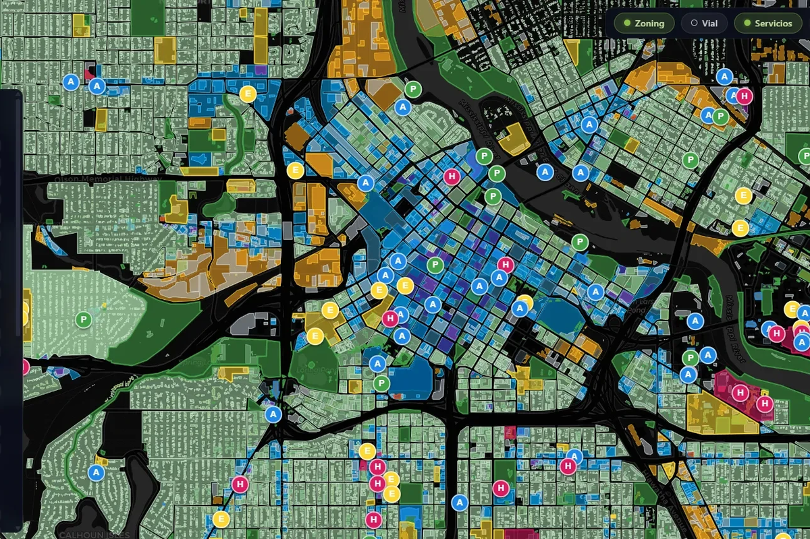
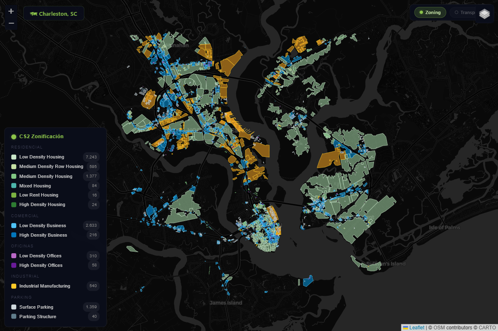
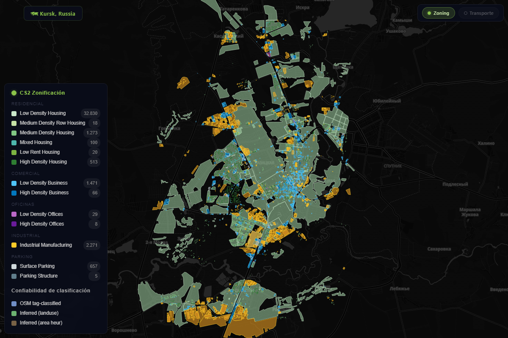

OpenStreetMap zoning
for Cities: Skylines 2 builders.
Real-world cities, ready to import. Open data, open source, zero friction. Browse 16 curated maps or request your own.
16Cities
1.1MFeatures
10Countries
v3.4Version
Featured cities

Minneapolis, MN
🇺🇸 USA
Ciudad hero — fully featured

Amsterdam
🇳🇱 Netherlands
Canales y bike-first urbanism

Madison, WI
🇺🇸 USA
Isthmus capital — mid-size americana

Charleston, SC
🇺🇸 USA
Historic peninsula + Lowcountry urbanism

Mafra, SC
🇧🇷 Brazil
Pequeña urbanidad brasileña + industria + rural

Trondheim
🇳🇴 Norway
Corazón de Noruega — fiordo y casco antiguo

Bacau, Romania
🇷🇴 Romania
Bloques soviéticos con inspiración occidental

Fayetteville, NC
🇺🇸 USA
Home of Fort Bragg — military-anchored small city

Sacramento, CA
🇺🇸 USA
Capital de California — confluencia de ríos + transit hub

New York, NY
🇺🇸 USA
Megalópolis legendaria — grid ortogonal + densidad extrema

Hollister, CA
🇺🇸 USA
Agricultural valley + hilly/flat mix

Butterworth, Penang
🇲🇾 Malaysia
Penang port + SME industries + mixed-density

Antwerp
🇧🇪 Belgium
Diamond port + Scheldt riverfront

Łódź, Poland
🇵🇱 Poland
Tram-roundabout city + complex road layout

Kiel, Germany
🇩🇪 Germany
Busiest canal in the world + Baltic port

Kursk, Russia
🇷🇺 Russia
Southern Russian relief + early-electric tramway heritage
Request your city
Open an issue with your bbox and we'll add it to the collection.
Open issue template →No cities match. Try a different filter, or request your city →